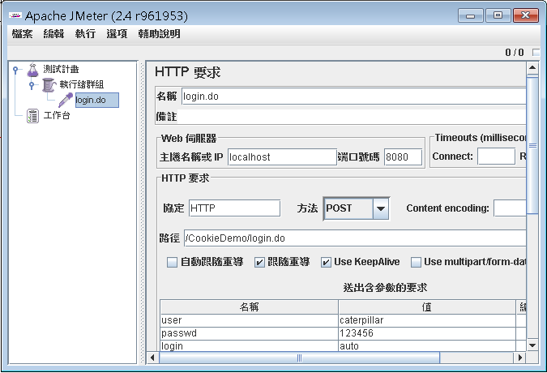
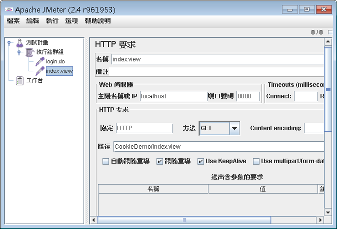
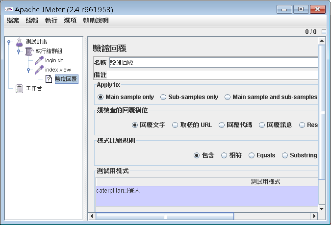
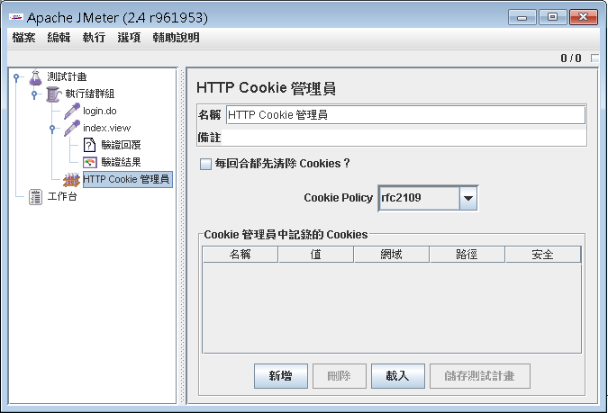
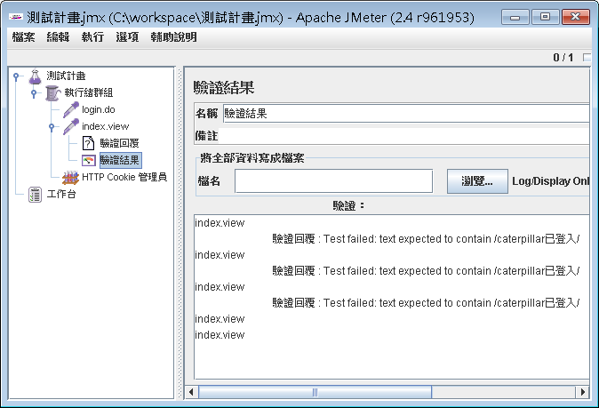

你 可以使用JMeter驗證應用程式該有的一些結果。例如，以 Cookie 中的例子，以下示範如何使用JMeter來驗證是否登入。首先如下建立index.do的「HTTP 要求」：

接著建立index.view的「HTTP 要求」：

接著在index.view上按右鍵執行「新增/驗證/驗證回覆」如下：

接 著在index.view上按右鍵執行「新增/接聽/驗證結果」，由於需要儲存與發送Cookie，所以於執行緒群組上按右鍵執行「新增/設定/HTTP Cookie 管理員」。結果如下：

儲存測試計畫，執行測試，可在驗證結果中看到測試是否成功，以下圖為例，前三個是失敗的，後兩個是成功的：
